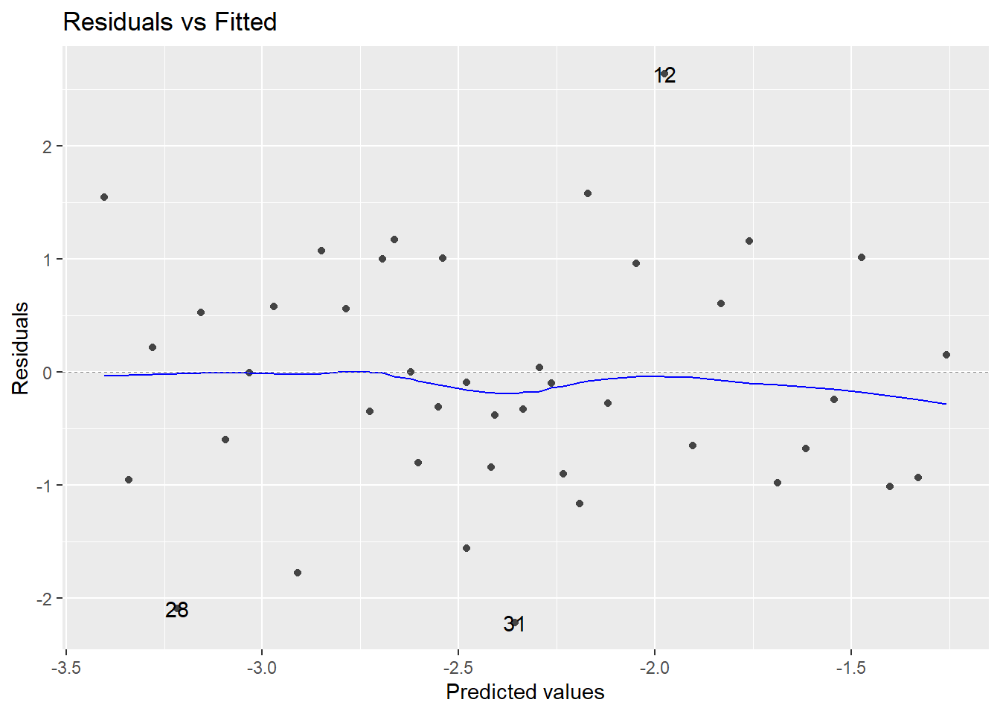
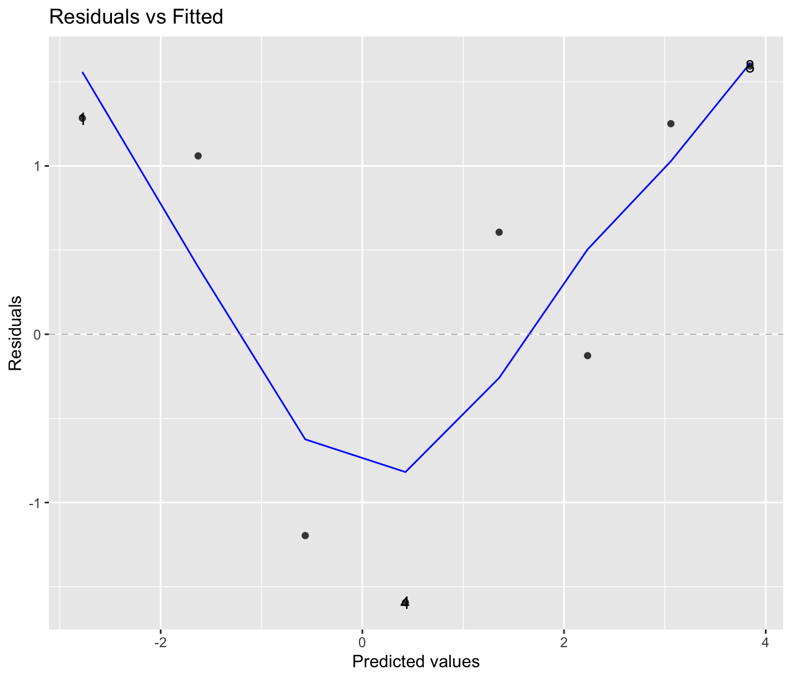
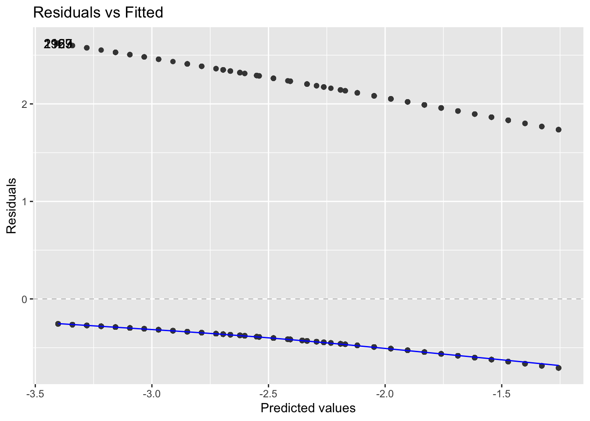

Functions from these packages will be used throughout this document:
Code
library(pander) # format tables for markdownlibrary(ggplot2) # graphicslibrary(ggeasy) # help with graphicslibrary(dplyr) # manipulate datalibrary(haven) # import Stata fileslibrary(knitr) # format R output for markdownlibrary(tidyr) # Tools to help to create tidy datalibrary(plotly) # interactive graphicslibrary(dobson) # datasets from Dobson and Barnett 2018library(parameters) # format model output tables for markdownlibrary(conflicted) # check for conflicting function definitions
Here are some R settings I use in this document:
Code
rm(list =ls()) # delete any data that's already loaded into Rknitr::opts_chunk$set(message =FALSE)options('digits'=4)
3.1 Introduction
3.1.1 What is logistic regression?
Logistic regression is a framework for modeling binary outcomes, conditional on one or more predictors (a.k.a. covariates).
Examples of binary variables include:
exposure (exposed vs unexposed)
disease (diseased vs healthy)
recovery (recovered vs unrecovered)
relapse (relapse vs remission)
return to hospital (returned vs not)
vital status (dead vs alive)
Logistic regression uses the Bernoulli distribution to model the outcome variable, conditional on one or more covariates.
Exercise 3.1 Write down a mathematical definition of the Bernoulli distribution.
3.1.2 Logistic regression versus linear regression
Logistic regression differs from linear regression, which uses the Gaussian (“normal”) distribution to model the outcome variable, conditional on the covariates.
Exercise 3.2 Recall: what kinds of outcomes is linear regression used for?
Solution. Linear regression is typically used for numerical outcomes that aren’t event counts or waiting times for an event. Examples of outcomes that are often analyzed using linear regression include include weight, height, and income.
3.2 Risk Estimation and Prediction
In Epi 203, you have already seen methods for modeling binary outcomes using one covariate that is also binary (such as exposure/non-exposure). In this section, we review one-covariate analyses, with a special focus on risk ratios and odds ratios, which are important concepts for interpreting logistic regression.
Example 3.1 (Oral Contraceptive Use and Heart Attack)
Research question: how does oral contraceptive (OC) use affect the risk of myocardial infarction (MI; a.k.a. heart attack)?
This was an issue when oral contraceptives were first developed, because the original formulations used higher concentrations of hormones. Modern OCs don’t have this issue.
Table 3.1 contains simulated data for an imaginary follow-up (a.k.a. prospective) study in which two groups are identified, one using OCs and another not using OCs, and both groups are tracked for three years to determine how many in each groups have MIs.
Depending on context, “controls” can mean either individuals who don’t experience an exposure of interest, or individuals who don’t experience an outcome of interest.
Definition 3.1 (cases and controls in retrospective studies) In retrospective studies, participants who experience the outcome of interest are called cases, while participants who don’t experience that outcome are called controls.
Definition 3.2 (treatment groups and control groups in prospective studies) In prospective studies, the group of participants who experience the treatment or exposure of interest is called the treatment group, while the participants who receive the baseline or comparison treatment (for example, clinical trial participants who receive a placebo or a standard-of-care treatment rather than an experimental treatment) are called controls.
3.2.1 Comparing probabilities
Risk differences
The simplest comparison of two probabilities, \(\pi_1\), and \(\pi_2\), is the difference of their values:
Definition 3.3 (Risk difference) The risk difference of two probabilities, \(\pi_1\), and \(\pi_2\), is the difference of their values: \[\delta(\pi_1,\pi_2) \stackrel{\text{def}}{=}\pi_1 - \pi_2\]
Example 3.2 In Example 3.1, the estimated risk difference in MI risk between OC users and OC non-users is:
Definition 3.4 (Relative risk ratios) The relative risk of two probabilities \(\pi_1\) and \(\pi_2\), also called the risk ratio, is the ratio of those probabilities:
\[\rho(\pi_1,\pi_2) = \frac{\pi_1}{\pi_2}\]
Example 3.3 Above, we estimated that: \[\hat{p}(MI|OC) = 0.0026\]
\[\hat{p}(MI|\neg OC) = 7\times 10^{-4}\]
So we might estimate that the relative risk of MI for OC versus non-OC is:
Both risk differences and risk ratios are defined by two probabilities, plus a choice of which probability is the baseline or reference probability (i.e., which probability is the subtrahend of the risk difference or the denominator of the risk ratio). To switch which one is the reference probability, invert the ratio and multiply the difference by -1.
Example 3.4 Above, we estimated that the risk ratio of OC versus non-OC is:
In logistic regression, we will make use of a transformation (rescaling) of probability, called odds.
Definition 3.5 (Odds) The odds of an outcome, denoted \(\omega\) (“omega”), is the probability that the outcome occurs, divided by the probability that it doesn’t occur.
That is, if the probability of an outcome is \(\pi\), then the corresponding odds of that outcome is
Example 3.5 (Calculating odds) In Exercise 3.3, we estimated that the probability of MI, given OC use, is \(\pi(OC) \stackrel{\text{def}}{=}\Pr(MI|OC) = 0.0026\). If this estimate is correct, then the odds of MI, given OC use, is:
The usual estimate for a probability of an event is “# events/# observations”. We often denote # events as \(x\) and # observations as \(n\). So: \[\hat\pi = \frac{x}{n}\] Thus, the usual estimate for the probability of a nonevent is:
Thus, the estimated odds is: \[
\begin{aligned}
\frac{\hat\pi}{1-\hat\pi}
&= \frac{\left(\frac{x}{n}\right)}{\left(\frac{n-x}{n}\right)}\\
&= \frac{x}{n-x}
\end{aligned}
\] That is, odds can be calculated directly as “# events” divided by “# nonevents” (without needing to calculate \(\hat\pi\) and \(1-\hat\pi\) first).
Example 3.6 (calculating odds using the shortcut) In Example 3.5, we calculated \[
\begin{aligned}
\omega(OC)
&=0.0026
\end{aligned}
\] Let’s recalculate this result using our shortcut:
Definition 3.6 (inverse odds function) The inverse odds function, \[\pi(\omega)\stackrel{\text{def}}{=}\frac{\omega}{1+\omega}\] converts odds into their corresponding probabilities (Figure 3.2).
The inverse-odds function takes an odds as input and produces a probability as output. Its domain of inputs is \([0,\infty)\) and its range of outputs is \([0,1]\).
When the outcome is rare (i.e., its probability is small) for both groups being compared in an odds ratio, the odds of the outcome will be similar to the probability of the outcome, and thus the risk ratio will be similar to the odds ratio.
For example, in Example 3.1, the outcome is rare for both OC and non-OC participants, so the odds for both groups are similar to the corresponding probabilities, and the odds ratio is similar the risk ratio.
A shortcut for calculating odds ratio estimates
The general form of a two-by-two table is shown in Table 3.2.
Exercise 3.9 For Table 3.2, show that \(\hat\theta(Exposed, Unexposed) = \hat\theta(Event, \neg Event)\).
3.2.5 Effect of study design
Table 3.1 simulates a follow-up study in which two populations were followed and the number of MI’s was observed. The risks are \(P(MI|OC)\) and \(P(MI|\neg OC)\) and we can estimate these risks from the data.
But suppose we had a case-control study in which we had 100 women with MI and selected a comparison group of 100 women without MI (matched as groups on age, etc.). Then MI is not random, and we cannot compute P(MI|OC) and we cannot compute the risk ratio. However, the odds ratio however can be computed.
The disease odds ratio is the odds for the disease in the exposed group divided by the odds for the disease in the unexposed group, and we cannot validly compute and use these separate parts.
But we can validly compute and use the exposure odds ratio, which is the odds for exposure in the disease group divided by the odds for exposure in the non-diseased group (because exposure can be treated as random):
And these two odds ratios, \(\hat\theta(MI|OC)\) and \(\hat\theta(OC|MI)\) are mathematically equivalent, as we saw in Section 3.2.4.2.
Exercise 3.10 Calculate the odds ratio of MI with respect to OC use, assuming that Table 3.1 comes from a case-control study. Confirm that the result is the same as in Example 3.7.
This is the same estimate we calculated in Example 3.7.
Cross-Sectional Studies
If a cross-sectional study is a probability sample of a population (which it rarely is) then we can estimate risks.
If it is a sample, but not an unbiased probability sample, then we need to treat it in the same way as a case-control study.
We can validly estimate odds ratios in either case.
But we can usually not validly estimate risks and risk ratios.
3.3 Introduction to logistic regression
In Example 3.1, we estimated the risk and the odds of MI for two discrete cases, as to whether of not the individual used oral contraceptives.
If the predictor is quantitative (dose) or there is more than one predictor, the task becomes more difficult.
In this case, we will use logistic regression, which is a generalization of the linear regression models you have been using that can account for a binary response instead of a continuous one.
3.3.1 Binary outcomes models - one group, no covariates
The difference is due to the binomial coefficient \(\left(n\atop x \right)\) which isn’t included in the individual-observations (Bernoulli) version of the model.
3.4 Multiple logistic regression
3.4.1 Coronary heart disease (WCGS) study data
Let’s use the data from the following study to explore multiple logistic regression:
“The Western Collaborative Group Study (WCGS) was a large epidemiological study designed to investigate the association between the”type A” behavior pattern and coronary heart disease (CHD) (Rosenman et al. 1964).”
From Wikipedia, “Type A and Type B personality theory”:
“The hypothesis describes Type A individuals as outgoing, ambitious, rigidly organized, highly status-conscious, impatient, anxious, proactive, and concerned with time management….
The hypothesis describes Type B individuals as a contrast to those of Type A. Type B personalities, by definition, are noted to live at lower stress levels. They typically work steadily and may enjoy achievement, although they have a greater tendency to disregard physical or mental stress when they do not achieve.”
Study design
from ?faraway::wcgs:
3154 healthy young men aged 39-59 from the San Francisco area were assessed for their personality type. All were free from coronary heart disease at the start of the research. Eight and a half years later change in CHD status was recorded.
Details (from faraway::wcgs)
The WCGS began in 1960 with 3,524 male volunteers who were employed by 11 California companies. Subjects were 39 to 59 years old and free of heart disease as determined by electrocardiogram. After the initial screening, the study population dropped to 3,154 and the number of companies to 10 because of various exclusions. The cohort comprised both blue- and white-collar employees.
At baseline the following information was collected:
socio-demographic including:
age
education
marital status
income
occupation
physical and physiological including:
height
weight
blood pressure
electrocardiogram
corneal arcus;
biochemical including:
cholesterol and lipoprotein fractions;
medical and family history and use of medications;
behavioral data including
Type A interview,
smoking,
exercise
alcohol use.
Later surveys added data on:
anthropometry
triglycerides
Jenkins Activity Survey
caffeine use
Average follow-up continued for 8.5 years with repeat examinations.
Reference: Coronary Heart Disease in the Western Collaborative Group Study Final Follow-up Experience of 8 1/2 Years Ray H. Rosenman, MD; Richard J. Brand, PhD; C. David Jenkins, PhD; Meyer Friedman, MD; Reuben Straus, MD; Moses Wurm, MD JAMA. 1975;233(8):872-877. doi:10.1001/jama.1975.03260080034016.
3.4.2 Load the data
Here, I load the data:
Code
## load the data directly from a UCSF website:# library(haven)# url = paste0( # # I'm breaking up the url into two chunks for readability# "https://regression.ucsf.edu/sites/g/files/",# "tkssra6706/f/wysiwyg/home/data/wcgs.dta")# wcgs = haven::read_dta(url)# I presaved the data in my project's `data` folderlibrary(here) # provides the `here()` functionlibrary(fs) # provides the `path()` functionhere::here() |> fs::path('data/wcgs.rda') |>load()
wcgs |>select(-c(id, uni, t1)) |>tableby(chd69 ~ ., data = _) |>summary(pfootnote =TRUE,title ="Baseline characteristics by CHD status at end of follow-up")
Baseline characteristics by CHD status at end of follow-up
No (N=2897)
Yes (N=257)
Total (N=3154)
p value
Age (years)
< 0.0011
Mean (SD)
46.082 (5.457)
48.490 (5.801)
46.279 (5.524)
Range
39.000 - 59.000
39.000 - 59.000
39.000 - 59.000
Arcus Senilis
< 0.0012
N-Miss
0
2
2
FALSE
2058 (71.0%)
153 (60.0%)
2211 (70.1%)
TRUE
839 (29.0%)
102 (40.0%)
941 (29.9%)
Behavioral Pattern
< 0.0012
A1
234 (8.1%)
30 (11.7%)
264 (8.4%)
A2
1177 (40.6%)
148 (57.6%)
1325 (42.0%)
B3
1155 (39.9%)
61 (23.7%)
1216 (38.6%)
B4
331 (11.4%)
18 (7.0%)
349 (11.1%)
Body Mass Index (kg/m2)
< 0.0011
Mean (SD)
24.471 (2.561)
25.055 (2.579)
24.518 (2.567)
Range
11.191 - 37.653
19.225 - 38.947
11.191 - 38.947
Total Cholesterol
< 0.0011
N-Miss
12
0
12
Mean (SD)
224.261 (42.217)
250.070 (49.396)
226.372 (43.420)
Range
103.000 - 400.000
155.000 - 645.000
103.000 - 645.000
Diastolic Blood Pressure
< 0.0011
Mean (SD)
81.723 (9.621)
85.315 (10.311)
82.016 (9.727)
Range
58.000 - 150.000
64.000 - 122.000
58.000 - 150.000
Behavioral Pattern
< 0.0012
Type A
1411 (48.7%)
178 (69.3%)
1589 (50.4%)
Type B
1486 (51.3%)
79 (30.7%)
1565 (49.6%)
Height (inches)
0.2901
Mean (SD)
69.764 (2.539)
69.938 (2.410)
69.778 (2.529)
Range
60.000 - 78.000
63.000 - 77.000
60.000 - 78.000
Ln of Systolic Blood Pressure
< 0.0011
Mean (SD)
4.846 (0.110)
4.900 (0.125)
4.850 (0.112)
Range
4.585 - 5.438
4.605 - 5.298
4.585 - 5.438
Ln of Weight
< 0.0011
Mean (SD)
5.126 (0.123)
5.155 (0.118)
5.128 (0.123)
Range
4.357 - 5.670
4.868 - 5.768
4.357 - 5.768
Cigarettes per day
< 0.0011
Mean (SD)
11.151 (14.329)
16.665 (15.657)
11.601 (14.518)
Range
0.000 - 99.000
0.000 - 60.000
0.000 - 99.000
Systolic Blood Pressure
< 0.0011
Mean (SD)
128.034 (14.746)
135.385 (17.473)
128.633 (15.118)
Range
98.000 - 230.000
100.000 - 200.000
98.000 - 230.000
Current smoking
< 0.0012
No
1554 (53.6%)
98 (38.1%)
1652 (52.4%)
Yes
1343 (46.4%)
159 (61.9%)
1502 (47.6%)
Observation (follow up) time (days)
< 0.0011
Mean (SD)
2775.158 (562.205)
1654.700 (859.297)
2683.859 (666.524)
Range
238.000 - 3430.000
18.000 - 3229.000
18.000 - 3430.000
Type of CHD Event
None
0 (0.0%)
0 (0.0%)
0 (0.0%)
infdeath
2897 (100.0%)
0 (0.0%)
2897 (91.9%)
silent
0 (0.0%)
135 (52.5%)
135 (4.3%)
angina
0 (0.0%)
71 (27.6%)
71 (2.3%)
4
0 (0.0%)
51 (19.8%)
51 (1.6%)
Weight (lbs)
< 0.0011
Mean (SD)
169.554 (21.010)
174.463 (21.573)
169.954 (21.096)
Range
78.000 - 290.000
130.000 - 320.000
78.000 - 320.000
Weight Category
< 0.0012
< 140
217 (7.5%)
15 (5.8%)
232 (7.4%)
140-170
1440 (49.7%)
98 (38.1%)
1538 (48.8%)
170-200
1049 (36.2%)
122 (47.5%)
1171 (37.1%)
> 200
191 (6.6%)
22 (8.6%)
213 (6.8%)
RECODE of age (Age)
< 0.0012
35-40
512 (17.7%)
31 (12.1%)
543 (17.2%)
41-45
1036 (35.8%)
55 (21.4%)
1091 (34.6%)
46-50
680 (23.5%)
70 (27.2%)
750 (23.8%)
51-55
463 (16.0%)
65 (25.3%)
528 (16.7%)
56-60
206 (7.1%)
36 (14.0%)
242 (7.7%)
Linear Model ANOVA
Pearson’s Chi-squared test
3.4.5 Data by age and personality type
For now, we will look at the interaction between age and personality type (dibpat). To make it easier to visualize the data, we summarize the event rates for each combination of age:
Exercise 3.11 If I give you model 1, how would you get the coefficients of model 2?
3.5 Fitting logistic regression models
3.5.1
In general, the estimating equation \(\ell'(\beta; \mathbf x) = 0\) cannot be solved analytically.
Instead, we have to use a variant of the Newton-Raphson method, which was discussed briefly in Epi 203. We won’t go over it in this class; if you need to learn it, see Chapter 4 of Dobson and Barnett.
For now, all you need to know is that we make an iterative series of guesses, and each guess helps us make the next guess better (higher log-likelihood).
You can see some information about this process like so:
After each iteration of the fitting procedure, the deviance (\(2(\ell_{\text{full}} - \ell(\hat\beta))\) ) is printed. You can see that the algorithm took six iterations to converge to a solution where the likelihood wasn’t changing much anymore.
3.6 Model comparisons for logistic models
3.6.1 Deviance test
We can compare the maximized log-likelihood of our model, \(\ell(\hat\beta; \mathbf x)\), versus the log-likelihood of the full model (aka saturated model aka maximal model), \(\ell_{\text{full}}\), which has one parameter per covariate pattern. With enough data, \(2(\ell_{\text{full}} - \ell(\hat\beta; \mathbf x)) \dot \sim \chi^2(N - p)\), where \(N\) is the number of distinct covariate patterns and \(p\) is the number of \(\beta\) parameters in our model. A significant p-value for this deviance statistic indicates that there’s some detectable pattern in the data that our model isn’t flexible enough to catch.
Caution
The deviance statistic needs to have a large amount of data for each covariate pattern for the \(\chi^2\) approximation to hold. A guideline from Dobson is that if there are \(q\) distinct covariate patterns \(x_1...,x_q\), with \(n_1,...,n_q\) observations per pattern, then the expected frequencies \(n_k \cdot \pi(x_k)\) should be at least 1 for every pattern \(k\in 1:q\).
If you have covariates measured on a continuous scale, you may not be able to use the deviance tests to assess goodness of fit.
3.6.2 Hosmer-Lemeshow test
If our covariate patterns produce groups that are too small, a reasonable solution is to make bigger groups by merging some of the covariate-pattern groups together.
Hosmer and Lemeshow (1980) proposed that we group the patterns by their predicted probabilities according to the model of interest. For example, you could group all of the observations with predicted probabilities of 10% or less together, then group the observations with 11%-20% probability together, and so on; \(g=10\) categories in all.
Then we can construct a statistic \[X^2 = \sum_{c=1}^g \frac{(o_c - e_c)^2}{e_c}\] where \(o_c\) is the number of events observed in group \(c\), and \(e_c\) is the number of events expected in group \(c\) (based on the sum of the fitted values \(\hat\pi_i\) for observations in group \(c\)).
If each group has enough observations in it, you can compare \(X^2\) to a \(\chi^2\) distribution; by simulation, the degrees of freedom has been found to be approximately \(g-2\).
Our statistic is \(X^2 = 1.1103\); \(p(\chi^2(1) > 1.1103) = 0.292\), which is our p-value for detecting a lack of goodness of fit.
Unfortunately that grouping plan left us with just three categories with any observations, so instead of grouping by 10% increments of predicted probability, typically analysts use deciles of the predicted probabilities:
Now we have more evenly split categories. The p-value is \(0.5604\), still not significant.
Graphically, we have compared:
Code
HL_plot = HL_table |>ggplot(aes(x = pred_prob_cats1)) +geom_line(aes(y = e, x = pred_prob_cats1, group ="Expected", col ="Expected")) +geom_point(aes(y = e, size = n, col ="Expected")) +geom_point(aes(y = o, size = n, col ="Observed")) +geom_line(aes(y = o, col ="Observed", group ="Observed")) +scale_size(range =c(1,4)) +theme_bw() +ylab("number of CHD events") +theme(axis.text.x =element_text(angle =45))
Don’t worry about these options for now; I chose them to match autoplot() as closely as I can. plot.glm and autoplot use stats::lowess instead of stats::loess; stats::lowess is older, hard to use with geom_smooth, and hard to match exactly with stats::loess; see https://support.bioconductor.org/p/2323/.]
Code
wcgs_response_resid_plot |>ggplotly()
We can see a slight fan-shape here: observations on the right have larger variance (as expected since \(var(\bar y) = \pi(1-\pi)/n\) is maximized when \(\pi = 0.5\)).
3.7.3 Pearson residuals
The fan-shape in the response residuals plot isn’t necessarily a concern here, since we haven’t made an assumption of constant residual variance, as we did for linear regression.
However, we might want to divide by the standard error in order to make the graph easier to interpret. Here’s one way to do that:
The Pearson (chi-squared) residual for covariate pattern \(k\) is: \[
\begin{aligned}
X_k &= \frac{\bar y_k - \hat\pi_k}{\sqrt{\hat \pi_k (1-\hat\pi_k)/n_k}}
\end{aligned}
\]
Let’s take a look at the Pearson residuals for our CHD model from the WCGS data (graphed against the fitted values on the logit scale):
Code
library(ggfortify)
Code
autoplot(chd_glm_strat_grouped, which =1, ncol =1) |>print()

The fan-shape is gone, and these residuals don’t show any obvious signs of model fit issues.
Pearson residuals plot for beetles data
If we create the same plot for the beetles model, we see some strong evidence of a lack of fit:
Code
autoplot(beetles_glm_grouped, which =1, ncol =1) |>print()

Pearson residuals with individual (ungrouped) data
What happens if we try to compute residuals without grouping the data by covariate pattern?
Code
library(ggfortify)
Code
autoplot(chd_glm_strat, which =1, ncol =1) |>print()

Meaningless.
Residuals plot by hand (optional section)
If you want to check your understanding of what these residual plots are, try building them yourself:
Code
wcgs_grouped = wcgs_grouped |>mutate(fitted = chd_glm_strat_grouped |>fitted(),fitted_logit = fitted |>logit(),resids = chd_glm_strat_grouped |>resid(type ="pearson") )wcgs_resid_plot1 = wcgs_grouped |>ggplot(mapping =aes(x = fitted_logit,y = resids ) ) +geom_point(aes(col = dibpat) ) +geom_hline(yintercept =0) +geom_smooth(se =FALSE, method.args =list(span=2/3,degree=1,family="symmetric",iterations=3,surface="direct"# span = 2/3, # iterations = 3 ),method = stats::loess)# plot.glm and autoplot use stats::lowess, which is hard to use with # geom_smooth and hard to match exactly; # see https://support.bioconductor.org/p/2323/
Code
wcgs_resid_plot1 |>ggplotly()
3.7.4 Pearson chi-squared goodness of fit test
The Pearson chi-squared goodness of fit statistic is: \[
X^2 = \sum_{k=1}^m X_k^2
\] Under the null hypothesis that the model in question is correct (i.e., sufficiently complex), \(X^2\ \dot \sim\ \chi^2(N-p)\).
For our CHD model, the p-value for this test is 0.2652; no significant evidence of a lack of fit at the 0.05 level.
Standardized Pearson residuals
Especially for small data sets, we might want to adjust our residuals for leverage (since outliers in \(X\) add extra variance to the residuals):
\[r_{P_k} = \frac{X_k}{\sqrt{1-h_k}}\]
where \(h_k\) is the leverage of \(X_k\). The functions autoplot() and plot.lm() use these for some of their graphs.
3.7.5 Deviance residuals
For large sample sizes, the Pearson and deviance residuals will be approximately the same. For small sample sizes, the deviance residuals from covariate patterns with small sample sizes can be unreliable (high variance).
Hard to tell much from so little data, but there might be some issues here.
3.8 Odds Ratios vs Probability (Risk) Ratios
Definition 3.10 (Relative risk) The relative risk comparing two probabilities \(\pi_1\) and \(\pi_2\), also known as the risk ratio, relative risk ratio, probability ratio, and rate ratio, is:
When I try to use link ="log" in practice, I often get errors about not finding good starting values for the estimation procedure. This is likely because the model is producing fitted probabilities greater than 1.
When this happens, you can try to fit Poisson regression models instead (we will see those soon!). But then the outcome distribution isn’t quite right, and you won’t get warnings about fitted probabilities greater than 1. In my opinion, the Poisson model for binary outcomes is confusing and not very appealing.
Dobson, Annette J, and Adrian G Barnett. 2018. An Introduction to Generalized Linear Models. 4th ed. CRC press. https://doi.org/10.1201/9781315182780.
Vittinghoff, Eric, David V Glidden, Stephen C Shiboski, and Charles E McCulloch. 2012. Regression Methods in Biostatistics: Linear, Logistic, Survival, and Repeated Measures Models. 2nd ed. Springer. https://doi.org/10.1007/978-1-4614-1353-0.
Source Code
---title: "Logistic Regression"---{{< include shared-config.qmd >}}## Acknowledgements {.unnumbered}This content is adapted from:- @dobson2018introduction, Chapter 7- @vittinghoff2012regression, Chapter 5- <https://dmrocke.ucdavis.edu/Class/EPI204-Spring-2021/EPI204-Spring-2021.html>## Configuring R {.unnumbered}Functions from these packages will be used throughout this document:```{r packages, message = FALSE}library(pander) # format tables for markdownlibrary(ggplot2) # graphicslibrary(ggeasy) # help with graphicslibrary(dplyr) # manipulate datalibrary(haven) # import Stata fileslibrary(knitr) # format R output for markdownlibrary(tidyr) # Tools to help to create tidy datalibrary(plotly) # interactive graphicslibrary(dobson) # datasets from Dobson and Barnett 2018library(parameters) # format model output tables for markdownlibrary(conflicted) # check for conflicting function definitions```Here are some R settings I use in this document:```{r options, message=FALSE}rm(list =ls()) # delete any data that's already loaded into Rknitr::opts_chunk$set(message =FALSE)options('digits'=4)```# Introduction## What is logistic regression?```{r}#| include: falselibrary(pander)```**Logistic regression** is a framework for modeling [binary](probability.qmd#def-binary) outcomes, conditional on one or more *predictors* (a.k.a. *covariates*).Examples of binary variables include:* exposure (exposed vs unexposed)* disease (diseased vs healthy)* recovery (recovered vs unrecovered)* relapse (relapse vs remission)* return to hospital (returned vs not)* vital status (dead vs alive)Logistic regression uses the [Bernoulli](probability.qmd#def-bernoulli) distribution to model the outcome variable, conditional on one or more covariates. ::: {#exr-def-bernoulli}Write down a mathematical definition of the Bernoulli distribution.::::{.solution}See @def-bernoulli.:::::::## Logistic regression versus linear regressionLogistic regression differs from linear regression, which uses the Gaussian ("normal") distribution to model the outcome variable, conditional on the covariates.:::: {#exr-linear}Recall: what kinds of outcomes is linear regression used for?::: {.solution}Linear regression is typically used for numerical outcomes that aren't event counts or waiting times for an event. Examples of outcomes that are often analyzed using linear regression include include weight, height, and income.:::::::# Risk Estimation and PredictionIn Epi 203, you have already seen methods for modeling binary outcomes using one covariate that is also binary (such as exposure/non-exposure).In this section, we review one-covariate analyses, with a special focus on risk ratios and odds ratios, which are important concepts for interpreting logistic regression.:::::{#exm-oc-mi}## Oral Contraceptive Use and Heart Attack* Research question: how does oral contraceptive (OC) use affect the risk of myocardial infarction (MI; a.k.a. heart attack)?:::{.note}This was an issue when oral contraceptives were first developed, because the original formulations used higher concentrations of hormones. Modern OCs don't have this issue.:::@tbl-oc-mi contains simulated data for an imaginary follow-up (a.k.a. *prospective*) study in which two groups are identified, one using OCs and another not using OCs, and both groups are tracked for three years to determine how many in each groups have MIs.```{r}#| message: false#| code-fold: true#| label: tbl-oc-mi#| tbl-cap: Simulated data from study of oral contraceptive use and heart attack risklibrary(dplyr)oc_mi =tribble(~OC, ~MI, ~Total,"OC use", 13, 5000,"No OC use", 7, 10000 ) |>mutate(`No MI`= Total - MI) |>relocate(`No MI`, .after = MI)totals = oc_mi |>summarize(across(c(MI, `No MI`, Total), sum)) |>mutate(OC ="Total")oc_mi =bind_rows(oc_mi, totals)pander(oc_mi)```:::::::::{#exr-probs}Review: estimate the probabilities of MI for OC users and non-OC users in @exm-oc-mi.:::{.solution}```{r, include = FALSE}p_MI_OC =13/5000p_MI_nOC =7/10000```$$\hat{p}(MI|OC) = \frac{13}{5000} = `r p_MI_OC`$$$$\hat{p}(MI|\neg OC) = \frac{7}{10000} = `r p_MI_nOC`$$:::::::::::{.callout-note}## Two meanings of "controls"Depending on context, "controls" can mean either individuals who don't experience an *exposure* of interest, or individuals who don't experience an *outcome* of interest.:::{#def-cases-retrospective}### cases and controls in retrospective studiesIn *retrospective studies*, participants who experience the outcome of interest are called **cases**, while participants who don't experience that outcome are called **controls**. ::::::{#def-cases-prospective}### treatment groups and control groups in prospective studiesIn *prospective studies*, the group of participants who experience the treatment or exposure of interest is called the **treatment group**, while the participants who receive the baseline or comparison treatment (for example, clinical trial participants who receive a placebo or a standard-of-care treatment rather than an experimental treatment) are called **controls**.:::::::## Comparing probabilities### Risk differencesThe simplest comparison of two probabilities, $\pi_1$, and $\pi_2$, is the difference of their values::::::{.columns}:::{#def-RD}### Risk differenceThe **risk difference** of two probabilities, $\pi_1$, and $\pi_2$, is the difference of their values: $$\delta(\pi_1,\pi_2) \eqdef \pi_1 - \pi_2$$::::::{#exm-RD}In @exm-oc-mi, the estimated risk difference in MI risk between OC users and OC non-users is:```{r, include = FALSE}rd_OC = p_MI_OC - p_MI_nOC```$$\begin{aligned}\hat\delta(\pi(OC), \pi(\neg OC))&= \delta(\hat\pi(OC), \hat\pi(\neg OC))\\&= \hat\pi(OC) - \hat\pi(\neg OC)\\&= `r p_MI_OC` - `r p_MI_nOC`\\&= `r rd_OC`\end{aligned}$$::::::::### Risk ratios:::::{.columns}:::{#def-RR}## Relative risk ratiosThe **relative risk** of two probabilities $\pi_1$ and $\pi_2$, also called the **risk ratio**, is the ratio of those probabilities:$$\rho(\pi_1,\pi_2) = \frac{\pi_1}{\pi_2}$$::::::{#exm-RR}Above, we estimated that:$$\hat{p}(MI|OC) = `r 13/5000`$$$$\hat{p}(MI|\neg OC) = `r 7/10000`$$So we might estimate that the *relative risk* of MI for OC versus non-OC is:$$\begin{aligned}\hat\rho(OC, \neg OC)&=\frac{\hat{p}(MI|OC)}{\hat{p}(MI|\neg OC)}\\&= \frac{`r 13/5000`}{`r 7/10000`}\\&= `r (13/5000)/(7/10000)`\end{aligned}$$::::::::Both risk differences and risk ratios are defined by two probabilities, plus a choice of which probability is the **baseline** or **reference** probability (i.e., which probability is the subtrahend of the risk difference or the denominator of the risk ratio). To switch which one is the reference probability, invert the ratio and multiply the difference by -1.:::{#exm-ref}Above, we estimated that the risk ratio of OC versus non-OC is:$$\begin{aligned}\rho(OC, \neg OC)&= `r (13/5000)/(7/10000)`\end{aligned}$$In comparison, the risk ratio for non-OC versus OC is:$$\begin{aligned}\rho(\neg OC, OC)&=\frac{\hat{p}(MI|\neg OC)}{\hat{p}(MI|OC)}\\&= \frac{`r 7/10000`}{`r 13/5000`}\\&= `r (7/10000)/(13/5000)`\\&= \frac{1}{\rho(OC, \neg OC)}\end{aligned}$$:::## Odds and probabilitiesIn logistic regression, we will make use of a transformation (rescaling) of probability, called *odds*.:::{#def-odds}### OddsThe **odds** of an outcome, denoted $\omega$ ("omega"), is the probability that the outcome occurs, divided by the probability that it doesn't occur. That is, if the probability of an outcome is $\pi$, then the corresponding odds of that outcome is $$\omega(\pi) \eqdef \frac{\pi}{1-\pi}$$This function, which transforms probabilities into odds, is called the **odds function** (see @fig-odds-probs).:::```{r}#| code-fold: true#| label: fig-odds-probs#| fig-cap: Odds versus probabilityodds =function(pi) pi/(1-pi)library(ggplot2)odds_plot =ggplot() +geom_function(fun = odds, aes(col ="odds function")) +xlim(0, .5) +xlab("Probability") +ylab("Odds") +geom_abline(aes(intercept =0, slope =1, col ="y=x")) +theme_bw()print(odds_plot)```:::{#exm-odds}## Calculating oddsIn @exr-probs, we estimated that the probability of MI, given OC use, is $\pi(OC) \eqdef \Pr(MI|OC) = `r 13/5000`$. If this estimate is correct, then the odds of MI, given OC use, is:```{r}#| include: falsepi_OC =13/5000odds_OC =odds(pi_OC)```$$\begin{aligned}\omega(OC) &\eqdef \frac{\Pr(MI|OC)}{\Pr(\neg MI|OC)}\\&=\frac{\Pr(MI|OC)}{1-\Pr(MI|OC)}\\&=\frac{\pi(OC)}{1-\pi(OC)}\\&=\frac{`r 13/5000`}{1-`r 13/5000`}\\&=`r (13/5000)/(1- (13/5000))`\end{aligned}$$::::::{#exr-odds}## Calculating oddsEstimate the odds of MI, for non-OC users.::::{.solution}```{r, include = FALSE}pi_nOC =7/10000odds_nOC = pi_nOC/(1-pi_nOC)```$$\omega_(\neg OC) = `r odds_nOC`$$:::::::### A shortcut for calculating oddsThe usual estimate for a probability of an event is "# events/# observations". We often denote # events as $x$ and # observations as $n$. So: $$\hat\pi = \frac{x}{n}$$ Thus, the usual estimate for the probability of a nonevent is:$$\begin{aligned}1-\hat\pi &= 1-\frac{x}{n}\\&= \frac{n}{n} - \frac{x}{n}\\&= \frac{n - x}{n}\end{aligned}$$Thus, the estimated odds is:$$\begin{aligned}\frac{\hat\pi}{1-\hat\pi}&= \frac{\left(\frac{x}{n}\right)}{\left(\frac{n-x}{n}\right)}\\&= \frac{x}{n-x}\end{aligned}$$That is, odds can be calculated directly as "# events" divided by "# nonevents" (without needing to calculate $\hat\pi$ and $1-\hat\pi$ first).::::{#exm-odds-shortcut}### calculating odds using the shortcutIn @exm-odds, we calculated $$\begin{aligned}\omega(OC) &=`r (13/5000)/(1- (13/5000))`\end{aligned}$$Let's recalculate this result using our shortcut:$$\begin{aligned}\omega(OC) &=\frac{13}{5000-13}\\&=`r (13)/(5000- 13)`\end{aligned}$$Same answer!::::### Odds of rare eventsFor rare events (small $\pi$), odds and probabilities are nearly equal, because $1-\pi \approx 1$ (see @fig-odds-probs).For example, in @exm-odds, the probability and odds differ by $`r abs(pi_OC - odds_OC)`$.:::{#exr-odds-probs}What odds value corresponds to the probability $\pi = 0.2$, and what is the numerical difference between these two values?::::{.solution}$$\omega = \frac{\pi}{1-\pi} =\frac{.2}{.8}= .25$$:::::::## The inverse odds function:::{#def-inv-odds}#### inverse odds functionThe **inverse odds function**, $$\pi(\omega)\eqdef \frac{\omega}{1+\omega}$$converts odds into their corresponding probabilities (@fig-inv-odds).:::The inverse-odds function takes an odds as input and produces a probability as output. Its domain of inputs is $[0,\infty)$ and its range of outputs is $[0,1]$.```{r}#| label: fig-inv-odds#| fig-cap: The inverse odds function, $\pi(\omega)$odds_inv =function(omega) omega / (1+ omega)ggplot() +geom_function(fun = odds_inv, aes(col ="inverse-odds")) +xlab("Odds") +ylab("Probability") +xlim(0,5) +ylim(0,1) +geom_abline(aes(intercept =0, slope =1, col ="x=y"))```:::{.callout-important}An equivalent expression for the inverse odds function is $$\pi(\omega) = (1-\omega^{-1})^{-1}$${#eq-inv-odds-reduced}::::::{#exr-inv-odds2}Prove that @eq-inv-odds-reduced is equivalent to @def-inv-odds.::::::{#exr-odds-probs}What probability corresponds to an odds of $\omega = 1$, and what is the numerical difference between these two values?::::{.solution}$$\pi(1) = \frac{1}{1+1} =\frac{1}{2}= .5$$$$1 - \pi(1) = 1 - .5 = .5$$:::::::## Odds ratiosNow that we have defined odds, we can introduce another way of comparing event probabilities: odds ratios.:::{#def-OR}#### Odds ratioThe **odds ratio** for two odds $\omega_1$, $\omega_2$ is their ratio:$$\theta(\omega_1, \omega_2) = \frac{\omega_1}{\omega_2}$$::::::{#exm-OR}### Calculating odds ratiosIn @exm-oc-mi, the odds ratio for OC users versus OC-non-users is:$$\begin{aligned}\theta(\omega(OC), \omega(\neg OC))&= \frac{\omega(OC)}{\omega(\neg OC)}\\&= \frac{`r pi_OC`}{`r pi_nOC`}\\&= `r pi_OC / pi_nOC`\\\end{aligned}$$:::When the outcome is rare (i.e., its probability is small) for both groups being compared in an odds ratio, the odds of the outcome will be similar to the probability of the outcome, and thus the risk ratio will be similar to the odds ratio.For example, in @exm-oc-mi, the outcome is rare for both OC and non-OC participants, so the odds for both groups are similar to the corresponding probabilities, and the odds ratio is similar the risk ratio.### A shortcut for calculating odds ratio estimatesThe general form of a two-by-two table is shown in @tbl-2x2-generic. | | Event | Non-Event | Total|-------------- | ------ | ---------- | ----- |Exposed | a | b | a+b|Non-exposed | c | d | c+d|Total | a+c | b+d | a+b+c+d: A generic 2x2 table {#tbl-2x2-generic}From this table, we have:* $\hat\pi(Event|Exposed) = a/(a+b)$* $\hat\pi(\neg Event|Exposed) = b/(a+b)$* $\hat\omega(Event|Exposed) = \frac{\left(\frac{a}{a+b}\right)}{\left(\frac{b}{a+b}\right)}=\frac{a}{b}$* $\hat\omega(Event|\neg Exposed) = \frac{c}{d}$(see @exr-odds-generic)* $\theta(Exposed,\neg Exposed) = \frac{\frac{a}{b}}{\frac{c}{d}} = \frac{ad}{bc}$:::{#exr-odds-generic}Given @tbl-2x2-generic, show that $\hat\omega(Event|\neg Exposed) = \frac{c}{d}$.:::### Properties of odds ratios {#sec-OR-props}Odds ratios have a special property: we can swap a covariate with the outcome, and the odds ratio remains the same.:::{#exm-or-inv-MI}In @exm-oc-mi, we have:$$\begin{aligned}\theta(MI; OC) &\eqdef\frac{\omega(MI|OC)}{\omega(MI|\neg OC)}\\&\eqdef \frac{\left(\frac{\Pr(MI|OC)}{\Pr(\neg MI|OC)}\right)}{\left(\frac{\Pr(MI|\neg OC)}{\Pr(\neg MI|\neg OC)}\right)}\\&= \frac{\left(\frac{\Pr(MI,OC)}{\Pr(\neg MI,OC)}\right)}{\left(\frac{\Pr(MI,\neg OC)}{\Pr(\neg MI,\neg OC)}\right)}\\&= \left(\frac{\Pr(MI,OC)}{\Pr(\neg MI,OC)}\right)\left(\frac{\Pr(\neg MI,\neg OC)}{\Pr(MI,\neg OC)}\right)\\&= \left(\frac{\Pr(MI,OC)}{\Pr(MI,\neg OC)}\right)\left(\frac{\Pr(\neg MI,\neg OC)}{\Pr(\neg MI,OC)}\right)\\&= \left(\frac{\Pr(OC,MI)}{\Pr(\neg OC,MI)}\right)\left(\frac{\Pr(\neg OC,\neg MI)}{\Pr(OC,\neg MI)}\right)\\&= \left(\frac{\Pr(OC|MI)}{\Pr(\neg OC|MI)}\right)\left(\frac{\Pr(\neg OC|\neg MI)}{\Pr(OC|\neg MI)}\right)\\&= \frac{\left(\frac{\Pr(OC|MI)}{\Pr(\neg OC|MI)}\right)}{\left(\frac{\Pr(OC|\neg MI)}{\Pr(\neg OC|\neg MI)}\right)}\\&\eqdef \frac{\omega(OC|MI)}{\omega(OC|\neg MI)}\\&\eqdef \theta(OC; MI)\end{aligned}$$::::::{#exr-2x2-generic}For @tbl-2x2-generic, show that $\hat\theta(Exposed, Unexposed) = \hat\theta(Event, \neg Event)$.:::## Effect of study design@tbl-oc-mi simulates a follow-up study in which two populations were followed and the number of MI’s was observed. The risks are $P(MI|OC)$ and $P(MI|\neg OC)$ and we can estimate these risks from the data.But suppose we had a case-control study in which we had 100 women with MI and selected a comparison group of 100 women without MI (matched as groups on age, etc.). Then MI is not random, and we cannot compute P(MI|OC) and we cannot compute the risk ratio. However, the odds ratio however can be computed.The disease odds ratio is the odds for the disease in the exposed group divided by the odds for the disease in the unexposed group, and we cannot validly compute and use these separate parts.But we can validly compute and use the exposure odds ratio, which is the odds for exposure in the disease group divided by the odds for exposure in the non-diseased group (because exposure can be treated as random):$$\hth(OC|MI) = \frac{\hat{\omega}(OC|MI)}{\hat{\omega}(OC|\neg MI)}$$And these two odds ratios, $\hth(MI|OC)$ and $\hth(OC|MI)$ are mathematically equivalent, as we saw in @sec-OR-props.:::{#exr-or-rev}Calculate the odds ratio of MI with respect to OC use, assuming that @tbl-oc-mi comes from a case-control study. Confirm that the result is the same as in @exm-OR.::::{.solution}* $\omega(OC|MI) = P(OC|MI)/(1 – P(OC|MI) = \frac{13}{7} = `r 13/7`$* $\omega(OC|\neg MI) = P(OC|\neg MI)/(1 – P(OC|\neg MI) = \frac{4987}{9993} = `r 4987/9993`$* $\theta(OC,MI) = \frac{\omega(OC|MI)}{\omega(OC|\neg MI)} = \frac{13/7}{4987/9993} = `r (13/7)/(4987/9993)`$This is the same estimate we calculated in @exm-OR.:::::::### Cross-Sectional Studies* If a cross-sectional study is a probability sample of a population (which it rarely is) then we can estimate risks.* If it is a sample, but not an unbiased probability sample, then we need to treat it in the same way as a case-control study.* We can validly estimate odds ratios in either case.* But we can usually not validly estimate risks and risk ratios.# Introduction to logistic regression* In @exm-oc-mi, we estimated the risk and the odds of MI for two discrete cases, as to whether of not the individual used oral contraceptives.* If the predictor is quantitative (dose) or there is more than one predictor, the task becomes more difficult.* In this case, we will use logistic regression, which is a generalization of the linear regression models you have been using that can account for a binary response instead of a continuous one.## Binary outcomes models - one group, no covariates$$\begin{aligned}p(Y=1) &= \pi\\p(Y=0) &= 1-\pi\\p(Y=y) &= \pi^y (1-\pi)^{1-y}\\\mathbf y &= (y_1, ..., y_n)\\\mathcal L(\pi;\mathbf y) &= \pi^{\sum y_i} (1-\pi)^{n - \sum y_i}\\\ell(\pi, \mathbf y) &= \left({\sum y_i}\right) \log{\pi} + \left(n - \sum y_i\right) \log{1-\pi}\\&= \left({\sum y_i}\right) \left(\log{\pi} - \log{1-\pi}\right) + n \cdot \log{1-\pi}\\&= \left({\sum y_i}\right) \log{\frac{\pi}{ 1-\pi}} + n \cdot \log{1-\pi}\end{aligned}$$## Binary outcomes - general$$\begin{aligned}p(Y_i=1) &= \pi_i\\p(Y_i=0) &= 1-\pi_i\\p(Y_i=y) &= (\pi_i)^y (1-\pi_i)^{1-y}\\\mathbf y &= (y_1, ..., y_n)\\\mathcal L(\pi;\mathbf y) &= \prod_{i=1}^n (\pi_i)^{y_i} (1-\pi_i)^{1 - y_i}\\\ell(\pi, \mathbf y) &= \sum_{i=1}^n y_i \log{\pi_i} + (1 - y_i) \log{1-\pi_i}\end{aligned}$$## Modeling $\pi_i$ as a function of $X_i$If there are only a few distinct $X_i$ values, we can model each oneseparately.Otherwise, we need regression.$$\begin{aligned}\pi(x) &\equiv \text{E}(Y=1|X=x)\\&= f(x^\top\beta)\end{aligned}$$Typically, we use $f(\eta) = \text{expit}(\eta)$.:::{#def-expit}### expit functionThe **expit** function (@fig-expit-plot), also known as the **inverse-logit** or **logistic** function, is:$$\begin{aligned}\text{expit}(\eta)&\eqdef \frac{\exp{\eta}}{1+\exp{\eta}}\\&= (1 + \exp{-\eta})^{-1}\end{aligned}$$```{r}#| label: fig-expit-plot#| fig-cap: The expit function#| code-fold: trueexpit =function(eta) exp(eta)/(1+exp(eta))library(ggplot2)expit_plot =ggplot() +geom_function(fun = expit) +xlim(-5, 5) +ylim(0,1) +ylab(expression(expit(eta))) +xlab(expression(eta)) +theme_bw()print(expit_plot)```::::::{#def-logit}#### logit functionThe inverse of the `expit` function is the `logit` function:$$g(p) = f^{-1}(p) = \text{logit}(p) = \log{\frac{p}{1-p}}$$:::```{r}#| code-fold: true#| fig-cap: the logit function#| label: fig-logitlogit =function(p) log(odds(p))logit_plot =ggplot() +geom_function(fun = logit) +xlim(.01, .99) +ylab("logit(p)") +xlab("p") +theme_bw()print(logit_plot)```## Diagram of expit and logit {#sec-expit-logit-diagram}::: {.content-visible when-format="pdf"}$$\left[ \pi \eqdef\Pr(Y=1)\right]\underbrace{\overbrace{\underset{\xleftarrow[ \frac{\omega}{1+\omega}]{}}{\xrightarrow{\frac{\pi}{1-\pi}}}\left[\omega \eqdef \text{odds}(Y=1)\right]\underset{\xleftarrow[\exp{\eta}]{}}{\xrightarrow{\log{\omega}}}}^{\text{logit}(\pi)}}_{\text{expit}(\eta)}\left[\eta \eqdef \text{log-odds}(Y=1)\right]$$:::::: {.content-hidden when-format="pdf"}$$\underbrace{\pi}_{\atop{\Pr(Y=1)} }\overbrace{\underbrace{\underset{\xleftarrow[\frac{\omega}{1+\omega}]{}}{\xrightarrow{\frac{\pi}{1-\pi}}}\underbrace{\omega}_{\text{odds}(Y=1)}\underset{\xleftarrow[\exp{\eta}]{}}{\xrightarrow{\log{\omega}}}}_{\text{expit}(\eta)}}^{\text{logit}(\pi)}\underbrace{\eta}_{\atop{\text{log-odds}(Y=1)}}$$:::## Meet the beetles```{r}library(glmx)data(BeetleMortality, package ="glmx")beetles = BeetleMortality |>mutate(pct = died/n,survived = n - died )plot1 = beetles |>ggplot(aes(x = dose, y = pct)) +geom_point(aes(size = n)) +xlab("Dose (log mg/L)") +ylab("Mortality rate (%)") +scale_y_continuous(labels = scales::percent) +scale_size(range =c(1,2)) +theme_bw(base_size =18)print(plot1)```Mortality rates of adult flour beetles after five hours' exposure togaseous carbon disulphide (Bliss 1935)## Why don't we use linear regression?```{r}beetles_glm_grouped = beetles |>glm(formula =cbind(died, survived) ~ dose, family ="binomial")lm1 = beetles |>reframe(.by =everything(),outcome =c(rep(1, times = died), rep(0, times = survived)) ) |>lm(formula = outcome ~ dose, data = _)lm2 = beetles |>reframe(.by =everything(),outcome =c(rep(1, times = died), rep(0, times = survived)) ) |>lm(formula = outcome ~log(dose), data = _)range1 =range(beetles$dose) +c(-.2, .2)f =function(x) predict(beetles_glm_grouped, newdata =data.frame(dose = x), type ="response")f.linear =function(x) predict(lm1, newdata =data.frame(dose = x))f.linearlog =function(x) predict(lm2, newdata =data.frame(dose = x))plot2 = plot1 +geom_function(fun = f.linear, aes(col ="Straight line")) +labs(colour="Model", size ="")plot2 |>print()```## Zoom out```{r}(plot2 +expand_limits(x =c(1.6, 2))) |>print()```## log transformation of dose?```{r}plot3 = plot2 +expand_limits(x =c(1.6, 2)) +geom_function(fun = f.linearlog, aes(col ="Log-transform dose"))(plot3 +expand_limits(x =c(1.6, 2))) |>print()```## Logistic regression```{r}plot4 = plot3 +geom_function(fun = f, aes(col ="Logistic regression"))plot4 |>print()```## Three parts to regression models- What distribution does the outcome have for a specific subpopulation defined by covariates? (outcome model)- How does the combination of covariates relate to the mean? (link function)- How do the covariates combine? (linear predictor, interactions)## Logistic regression in R```{r}beetles_glm_grouped = beetles |>glm(formula =cbind(died, survived) ~ dose, family ="binomial")beetles_glm_grouped |>parameters() |>print_md()```Fitted values:```{r}fitted.values(beetles_glm_grouped)predict(beetles_glm_grouped, type ="response")predict(beetles_glm_grouped, type ="link")fit_y = beetles$n *fitted.values(beetles_glm_grouped)```## Individual observations```{r}beetles_long = beetles |>reframe(.by =everything(),outcome =c(rep(1, times = died), rep(0, times = survived)) )beetles_long |>tibble() |>print()```Here's the model with individual data```{r}beetles_glm_ungrouped = beetles_long |>glm(formula = outcome ~ dose, family ="binomial")beetles_glm_ungrouped |>parameters() |>print_md()```Here's the previous version again:```{r}beetles_glm_grouped |>parameters() |>print_md()```They seem the same! But not quite:```{r}logLik(beetles_glm_grouped)logLik(beetles_glm_ungrouped)```The difference is due to the binomial coefficient$\left(n\atop x \right)$ which isn't included in theindividual-observations (Bernoulli) version of the model.# Multiple logistic regression## Coronary heart disease (WCGS) study dataLet's use the data from the following study to explore multiple logisticregression:### Summary of study*From @vittinghoff2012regression:*"The **Western Collaborative Group Study (WCGS)** was a largeepidemiological study designed to investigate the association betweenthe"type A" behavior pattern and coronary heart disease (CHD) (Rosenmanet al. 1964)."*From Wikipedia, "Type A and Type B personality theory":*"The hypothesis describes Type A individuals as outgoing, ambitious,rigidly organized, highly status-conscious, impatient, anxious,proactive, and concerned with time management....The hypothesis describes Type B individuals as a contrast to those ofType A. Type B personalities, by definition, are noted to live at lowerstress levels. They typically work steadily and may enjoy achievement,although they have a greater tendency to disregard physical or mentalstress when they do not achieve."### Study design*from `?faraway::wcgs`:*3154 healthy young men aged 39-59 from the San Francisco area wereassessed for their personality type. All were free from coronary heartdisease at the start of the research. Eight and a half years laterchange in CHD status was recorded.*Details (from `faraway::wcgs`)*The WCGS began in 1960 with 3,524 male volunteers who were employed by11 California companies. Subjects were 39 to 59 years old and free ofheart disease as determined by electrocardiogram. After the initialscreening, the study population dropped to 3,154 and the number ofcompanies to 10 because of various exclusions. The cohort comprised bothblue- and white-collar employees.At baseline the following information was collected:- socio-demographic including:- age- education- marital status- income- occupation- physical and physiological including:- height- weight- blood pressure- electrocardiogram- corneal arcus;- biochemical including:- cholesterol and lipoprotein fractions;- medical and family history and use of medications;- behavioral data including- Type A interview,- smoking,- exercise- alcohol use.Later surveys added data on: * anthropometry * triglycerides * Jenkins Activity Survey * caffeine useAverage follow-up continued for 8.5 years with repeat examinations.Reference: Coronary Heart Disease in the Western Collaborative GroupStudy Final Follow-up Experience of 8 1/2 Years Ray H. Rosenman, MD;Richard J. Brand, PhD; C. David Jenkins, PhD; Meyer Friedman, MD; ReubenStraus, MD; Moses Wurm, MD JAMA. 1975;233(8):872-877.doi:10.1001/jama.1975.03260080034016.## Load the dataHere, I load the data:```{r}#| code-fold: show## load the data directly from a UCSF website:# library(haven)# url = paste0( # # I'm breaking up the url into two chunks for readability# "https://regression.ucsf.edu/sites/g/files/",# "tkssra6706/f/wysiwyg/home/data/wcgs.dta")# wcgs = haven::read_dta(url)# I presaved the data in my project's `data` folderlibrary(here) # provides the `here()` functionlibrary(fs) # provides the `path()` functionhere::here() |> fs::path('data/wcgs.rda') |>load()```## Now let's do some data cleaning```{r}#| code-fold: showlibrary(arsenal) # provides `set_labels()`wcgs = wcgs |>mutate(age = age |> arsenal::set_labels("Age (years)"),arcus = arcus |>as.logical() |> arsenal::set_labels("Arcus Senilis"),time169 = time169 |>as.numeric() |> arsenal::set_labels("Observation (follow up) time (days)"),dibpat = dibpat |>as_factor() |>relevel(ref ="Type A") |> arsenal::set_labels("Behavioral Pattern"),typchd69 = typchd69 |>labelled(label ="Type of CHD Event",labels =c("None"=0, "infdeath"=1,"silent"=2,"angina"=3)),# turn stata-style labelled variables in to R-style factors:across(where(is.labelled), haven::as_factor) )```## What's in the data {.smaller}Here's a table of the data:```{r, results = "asis"}wcgs |>select(-c(id, uni, t1)) |>tableby(chd69 ~ ., data = _) |>summary(pfootnote =TRUE,title ="Baseline characteristics by CHD status at end of follow-up")```## Data by age and personality typeFor now, we will look at the interaction between age and personalitytype (`dibpat`). To make it easier to visualize the data, we summarizethe event rates for each combination of age:```{r}chd_grouped_data = wcgs |>summarize(.by =c(age, dibpat),n =n(),`p(chd)`=mean(chd69 =="Yes") |>labelled(label ="CHD Event by 1969"),`odds(chd)`=`p(chd)`/(1-`p(chd)`),`logit(chd)`=log(`odds(chd)`) )chd_grouped_data```## Graphical exploration### Probability scale```{r "graphical exploration"}library(ggplot2)library(ggeasy)library(scales)chd_plot_probs = chd_grouped_data |>ggplot(aes(x = age, y =`p(chd)`, col = dibpat) ) +geom_point(aes(size = n), alpha = .7) +scale_size(range =c(1,4)) +geom_line() +theme_bw() +ylab("P(CHD Event by 1969)") +scale_y_continuous(labels = scales::label_percent()) + ggeasy::easy_labs()```::: {.content-visible when-format="html"}```{r}ggplotly(chd_plot_probs)```:::::: {.content-visible when-format="pdf"}```{r}print(chd_plot_probs)```:::### Odds scale```{r}chd_plot_odds = chd_grouped_data |>ggplot(aes(x = age, y =`odds(chd)`, col = dibpat) ) +geom_point(aes(size = n), alpha = .7) +scale_size(range =c(1,4)) +geom_line() +theme_bw() +ylab("odds(CHD Event by 1969)") + ggeasy::easy_labs()```::: {.content-visible when-format="html"}```{r}ggplotly(chd_plot_odds)```:::::: {.content-visible when-format="pdf"}```{r}print(chd_plot_odds)```:::### Log-odds (logit) scale```{r}chd_plot_logit = chd_grouped_data |>ggplot(aes(x = age, y =`logit(chd)`, col = dibpat) ) +geom_point(aes(size = n), alpha = .7) +scale_size(range =c(1,4)) +geom_line() +theme_bw() +ylab("log{odds(CHD Event by 1969)}") + ggeasy::easy_labs()```::: {.content-visible when-format="html"}```{r}ggplotly(chd_plot_logit)```:::::: {.content-visible when-format="pdf"}```{r}print(chd_plot_logit)```:::## Logistic regression models for CHD data {.smaller}Here, we fit stratified models for CHD by personality type.```{r}chd_glm_strat =glm("formula"= chd69 =="Yes"~ dibpat + dibpat:age -1, "data"= wcgs,"family"=binomial(link ="logit"))chd_glm_strat |>parameters() |>print_md()```We can get the corresponding odds ratios ($e^{\beta}$s) by passing`exponentiate = TRUE` to `parameters()`:```{r}chd_glm_strat |>parameters(exponentiate =TRUE) |>print_md()```## Models superimposed on dataWe can graph our fitted models on each scale (probability, odds,log-odds).### probability scale```{r}curve_type_A =function(x) { chd_glm_strat |>predict(type ="response",newdata =tibble(age = x, dibpat ="Type A"))}curve_type_B =function(x) { chd_glm_strat |>predict(type ="response",newdata =tibble(age = x, dibpat ="Type B"))}chd_plot_probs_2 = chd_plot_probs +geom_function(fun = curve_type_A,aes(col ="Type A") ) +geom_function(fun = curve_type_B,aes(col ="Type B") )```::: {.content-visible when-format="html"}```{r}ggplotly(chd_plot_probs_2)```:::::: {.content-visible when-format="pdf"}```{r}print(chd_plot_probs_2)```:::### odds scale```{r}curve_type_A =function(x) { chd_glm_strat |>predict(type ="link",newdata =tibble(age = x, dibpat ="Type A")) |>exp()}curve_type_B =function(x) { chd_glm_strat |>predict(type ="link",newdata =tibble(age = x, dibpat ="Type B")) |>exp()}chd_plot_odds_2 = chd_plot_odds +geom_function(fun = curve_type_A,aes(col ="Type A") ) +geom_function(fun = curve_type_B,aes(col ="Type B") )```::: {.content-visible when-format="html"}```{r}ggplotly(chd_plot_odds_2)```:::::: {.content-visible when-format="pdf"}```{r}print(chd_plot_odds_2)```:::### log-odds (logit) scale```{r}curve_type_A =function(x) { chd_glm_strat |>predict(type ="link",newdata =tibble(age = x, dibpat ="Type A"))}curve_type_B =function(x) { chd_glm_strat |>predict(type ="link",newdata =tibble(age = x, dibpat ="Type B"))}chd_plot_logit_2 = chd_plot_logit +geom_function(fun = curve_type_A,aes(col ="Type A") ) +geom_function(fun = curve_type_B,aes(col ="Type B") )```::: {.content-visible when-format="html"}```{r}ggplotly(chd_plot_logit_2)```:::::: {.content-visible when-format="pdf"}```{r}print(chd_plot_logit_2)```:::## reference-group and contrast parametrizationWe can also use the corner-point parametrization (with reference groupsand contrasts):```{r}chd_glm_contrasts = wcgs |>glm("data"= _,"formula"= chd69 =="Yes"~ dibpat*age, "family"=binomial(link ="logit") )chd_glm_contrasts |>parameters() |>print_md()```Compare with what we had before:```{r}chd_glm_strat |>parameters() |>print_md()```:::{#exr-strat-to-contrast}If I give you model 1, how would you get the coefficients of model 2?:::# Fitting logistic regression models## In general, the estimating equation $\ell'(\beta; \mathbf x) = 0$ cannotbe solved analytically.Instead, we have to use a variant of the Newton-Raphson method, whichwas discussed briefly in Epi 203. We won't go over it in this class; ifyou need to learn it, see Chapter 4 of Dobson and Barnett.For now, all you need to know is that we make an iterative series ofguesses, and each guess helps us make the next guess better (higherlog-likelihood).You can see some information about this process like so:```{r}options(digits =8)temp = wcgs |>glm(control =glm.control(trace =TRUE),"data"= _,"formula"= chd69 =="Yes"~ dibpat*age, "family"=binomial(link ="logit") )```After each iteration of the fitting procedure, the deviance($2(\ell_{\text{full}} - \ell(\hat\beta))$ ) is printed. You can seethat the algorithm took six iterations to converge to a solution wherethe likelihood wasn't changing much anymore.# Model comparisons for logistic models {#sec-gof}## Deviance testWe can compare the maximized log-likelihood of our model,$\ell(\hat\beta; \mathbf x)$, versus the log-likelihood of the fullmodel (aka saturated model aka maximal model), $\ell_{\text{full}}$,which has one parameter per covariate pattern. With enough data,$2(\ell_{\text{full}} - \ell(\hat\beta; \mathbf x)) \dot \sim \chi^2(N - p)$,where $N$ is the number of distinct covariate patterns and $p$ is thenumber of $\beta$ parameters in our model. A significant p-value forthis **deviance** statistic indicates that there's some detectablepattern in the data that our model isn't flexible enough to catch.::: callout-cautionThe deviance statistic needs to have a large amount of data **for eachcovariate pattern** for the $\chi^2$ approximation to hold. A guidelinefrom Dobson is that if there are $q$ distinct covariate patterns$x_1...,x_q$, with $n_1,...,n_q$ observations per pattern, then theexpected frequencies $n_k \cdot \pi(x_k)$ should be at least 1 for everypattern $k\in 1:q$.:::If you have covariates measured on a continuous scale, you may not beable to use the deviance tests to assess goodness of fit.## Hosmer-Lemeshow testIf our covariate patterns produce groups that are too small, areasonable solution is to make bigger groups by merging some of thecovariate-pattern groups together.Hosmer and Lemeshow (1980) proposed that we group the patterns by theirpredicted probabilities according to the model of interest. For example,you could group all of the observations with predicted probabilities of10% or less together, then group the observations with 11%-20%probability together, and so on; $g=10$ categories in all.Then we can construct a statistic$$X^2 = \sum_{c=1}^g \frac{(o_c - e_c)^2}{e_c}$$ where $o_c$ is thenumber of events *observed* in group $c$, and $e_c$ is the number ofevents expected in group $c$ (based on the sum of the fitted values$\hat\pi_i$ for observations in group $c$).If each group has enough observations in it, you can compare $X^2$ to a$\chi^2$ distribution; by simulation, the degrees of freedom has beenfound to be approximately $g-2$.For our CHD model, this procedure would be:```{r}wcgs = wcgs |>mutate(pred_probs_glm1 = chd_glm_strat |>fitted(),pred_prob_cats1 = pred_probs_glm1 |>cut(breaks =seq(0, 1, by = .1), include.lowest =TRUE))HL_table = wcgs |>summarize(.by = pred_prob_cats1,n =n(),o =sum(chd69 =="Yes"),e =sum(pred_probs_glm1) )HL_table |>pander()X2 = HL_table |>summarize(`X^2`=sum((o-e)^2/e) ) |>pull(`X^2`)print(X2)pval1 =pchisq(X2, lower =FALSE, df =nrow(HL_table) -2)```Our statistic is $X^2 = `r X2`$; $p(\chi^2(1) > `r X2`) = `r pval1`$,which is our p-value for detecting a lack of goodness of fit.Unfortunately that grouping plan left us with just three categories withany observations, so instead of grouping by 10% increments of predictedprobability, typically analysts use deciles of the predictedprobabilities:```{r}wcgs = wcgs |>mutate(pred_probs_glm1 = chd_glm_strat |>fitted(),pred_prob_cats1 = pred_probs_glm1 |>cut(breaks =quantile(pred_probs_glm1, seq(0, 1, by = .1)), include.lowest =TRUE))HL_table = wcgs |>summarize(.by = pred_prob_cats1,n =n(),o =sum(chd69 =="Yes"),e =sum(pred_probs_glm1) )HL_table |>pander()X2 = HL_table |>summarize(`X^2`=sum((o-e)^2/e) ) |>pull(`X^2`)print(X2)pval1 =pchisq(X2, lower =FALSE, df =nrow(HL_table) -2)```Now we have more evenly split categories. The p-value is $`r pval1`$,still not significant.Graphically, we have compared:```{r}HL_plot = HL_table |>ggplot(aes(x = pred_prob_cats1)) +geom_line(aes(y = e, x = pred_prob_cats1, group ="Expected", col ="Expected")) +geom_point(aes(y = e, size = n, col ="Expected")) +geom_point(aes(y = o, size = n, col ="Observed")) +geom_line(aes(y = o, col ="Observed", group ="Observed")) +scale_size(range =c(1,4)) +theme_bw() +ylab("number of CHD events") +theme(axis.text.x =element_text(angle =45))```::: {.content-visible when-format="html"}```{r}ggplotly(HL_plot)```:::::: {.content-visible when-format="pdf"}```{r}print(HL_plot)```:::## Comparing models- AIC = $-2 * \ell(\hat\theta) + 2 * p$ \[lower is better\]- BIC = $-2 * \ell(\hat\theta) + p * \text{log}(n)$ \[lower is better\]- likelihood ratio \[higher is better\]# Residual-based diagnostics## Logistic regression residuals only work for grouped dataResiduals only work if there is more than one observation for mostcovariate patterns.Here we will create the grouped-data version of our CHD model from theWCGS study:```{r}wcgs_grouped = wcgs |>summarize(.by =c(dibpat, age),n =n(),chd =sum(chd69 =="Yes"),`!chd`=sum(chd69 =="No") )chd_glm_strat_grouped =glm("formula"=cbind(chd, `!chd`) ~ dibpat + dibpat:age -1, "data"= wcgs_grouped,"family"=binomial(link ="logit"))chd_glm_strat_grouped |>parameters() |>print_md()```## (Response) residuals$$e_k \eqdef \bar y_k - \hat{\pi}(x_k)$$($k$ indexes the covariate patterns)We can graph these residuals $e_k$ against the fitted values$\hat\pi(x_k)$:```{r}#| code-fold: showwcgs_grouped = wcgs_grouped |>mutate(fitted = chd_glm_strat_grouped |>fitted(),fitted_logit = fitted |>logit(),response_resids = chd_glm_strat_grouped |>resid(type ="response") )wcgs_response_resid_plot = wcgs_grouped |>ggplot(mapping =aes(x = fitted,y = response_resids ) ) +geom_point(aes(col = dibpat) ) +geom_hline(yintercept =0) +geom_smooth( #<1>se =TRUE, #<1>method.args =list( #<1>span=2/3, #<1>degree=1, #<1>family="symmetric", #<1>iterations=3), #<1>method = stats::loess) #<1>```1. Don't worry about these options for now; I chose them to match`autoplot()` as closely as I can. `plot.glm` and `autoplot` use`stats::lowess` instead of `stats::loess`; `stats::lowess` is older, hard to use with `geom_smooth`, and hard to match exactly with`stats::loess`; see https://support.bioconductor.org/p/2323/.\]::: {.content-visible when-format="pdf"}```{r}#| fig-height: 6wcgs_response_resid_plot |>print()```:::::: {.content-visible when-format="html"}```{r}wcgs_response_resid_plot |>ggplotly()```:::We can see a slight fan-shape here: observations on the right havelarger variance (as expected since $var(\bar y) = \pi(1-\pi)/n$ ismaximized when $\pi = 0.5$).## Pearson residualsThe fan-shape in the response residuals plot isn't necessarily a concernhere, since we haven't made an assumption of constant residual variance,as we did for linear regression.However, we might want to divide by the standard error in order to makethe graph easier to interpret. Here's one way to do that:The Pearson (chi-squared) residual for covariate pattern $k$ is: $$\begin{aligned}X_k &= \frac{\bar y_k - \hat\pi_k}{\sqrt{\hat \pi_k (1-\hat\pi_k)/n_k}}\end{aligned}$$where $$\begin{aligned}\hat\pi_k &\eqdef \hat\pi(x_k)\\&\eqdef \hat P(Y=1|X=x_k)\\&\eqdef \text{expit}(x_i'\hat \beta)\\&\eqdef \text{expit}(\hat \beta_0 + \sum_{j=1}^p \hat \beta_j x_{ij})\end{aligned}$$Let's take a look at the Pearson residuals for our CHD model from theWCGS data (graphed against the fitted values on the logit scale):```{r}library(ggfortify)```::: {.content-visible when-format="pdf"}```{r}#| fig-height: 6autoplot(chd_glm_strat_grouped, which =1, ncol =1) |>print()```:::::: {.content-visible when-format="html"}```{r}autoplot(chd_glm_strat_grouped, which =1, ncol =1) |>print()```:::The fan-shape is gone, and these residuals don't show any obvious signsof model fit issues.### Pearson residuals plot for `beetles` dataIf we create the same plot for the `beetles` model, we see some strongevidence of a lack of fit:::: {.content-visible when-format="html"}```{r}autoplot(beetles_glm_grouped, which =1, ncol =1) |>print()```:::::: {.content-visible when-format="pdf"}```{r}#| fig-height: 6autoplot(beetles_glm_grouped, which =1, ncol =1) |>print()```:::### Pearson residuals with individual (ungrouped) dataWhat happens if we try to compute residuals without grouping the data bycovariate pattern?```{r}library(ggfortify)```::: {.content-visible when-format="html"}```{r}autoplot(chd_glm_strat, which =1, ncol =1) |>print()```:::::: {.content-visible when-format="pdf"}```{r}#| fig-height: 6autoplot(chd_glm_strat, which =1, ncol =1) |>print()```:::Meaningless.### Residuals plot by hand (*optional section*)If you want to check your understanding of what these residual plotsare, try building them yourself:```{r}wcgs_grouped = wcgs_grouped |>mutate(fitted = chd_glm_strat_grouped |>fitted(),fitted_logit = fitted |>logit(),resids = chd_glm_strat_grouped |>resid(type ="pearson") )wcgs_resid_plot1 = wcgs_grouped |>ggplot(mapping =aes(x = fitted_logit,y = resids ) ) +geom_point(aes(col = dibpat) ) +geom_hline(yintercept =0) +geom_smooth(se =FALSE, method.args =list(span=2/3,degree=1,family="symmetric",iterations=3,surface="direct"# span = 2/3, # iterations = 3 ),method = stats::loess)# plot.glm and autoplot use stats::lowess, which is hard to use with # geom_smooth and hard to match exactly; # see https://support.bioconductor.org/p/2323/```::: {.content-visible when-format="pdf"}```{r}#| fig-height: 6wcgs_resid_plot1 |>print()```:::::: {.content-visible when-format="html"}```{r}wcgs_resid_plot1 |>ggplotly()```:::## Pearson chi-squared goodness of fit testThe Pearson chi-squared goodness of fit statistic is: $$X^2 = \sum_{k=1}^m X_k^2 $$ Under the null hypothesis that the model in question is correct(i.e., sufficiently complex), $X^2\ \dot \sim\ \chi^2(N-p)$.```{r}X = chd_glm_strat_grouped |>resid(type ="pearson")chisq_stat =sum(X^2)pval =pchisq( chisq_stat, lower =FALSE, df =length(X) -length(coef(chd_glm_strat_grouped)))```For our CHD model, the p-value for this test is `r pval`; no significantevidence of a lack of fit at the 0.05 level.### Standardized Pearson residualsEspecially for small data sets, we might want to adjust our residualsfor leverage (since outliers in $X$ add extra variance to theresiduals):$$r_{P_k} = \frac{X_k}{\sqrt{1-h_k}}$$where $h_k$ is the leverage of $X_k$. The functions `autoplot()` and`plot.lm()` use these for some of their graphs.## Deviance residualsFor large sample sizes, the Pearson and deviance residuals will beapproximately the same. For small sample sizes, the deviance residualsfrom covariate patterns with small sample sizes can be unreliable (highvariance).$$d_k = \text{sign}(y_k - n_k \hat \pi_k)\left\{\sqrt{2[\ell_{\text{full}}(x_k) - \ell(\hat\beta; x_k)]}\right\}$$### Standardized deviance residuals$$r_{D_k} = \frac{d_k}{\sqrt{1-h_k}}$$## Diagnostic plotsLet's take a look at the full set of `autoplot()` diagnostics now forour `CHD` model:::: {.content-visible when-format="html"}```{r}chd_glm_strat_grouped |>autoplot(which =1:6) |>print()```:::::: {.content-visible when-format="pdf"}```{r}#| fig-height: 6chd_glm_strat_grouped |>autoplot(which =1:6) |>print()```:::Things look pretty good here. The QQ plot is still usable; with largesamples; the residuals should be approximately Gaussian.### BeetlesLet's look at the beetles model diagnostic plots for comparison:::: {.content-visible when-format="html"}```{r}beetles_glm_grouped |>autoplot(which =1:6) |>print()```:::::: {.content-visible when-format="pdf"}```{r}#| fig-height: 6beetles_glm_grouped |>autoplot(which =1:6) |>print()```:::Hard to tell much from so little data, but there might be some issueshere.# Odds Ratios vs Probability (Risk) Ratios {#sec-OR-RR}::: {#def-rr}## Relative riskThe **relative risk** comparing two probabilities $\pi_1$ and $\pi_2$,also known as the **risk ratio**, **relative risk ratio**, **probabilityratio**, and **rate ratio**, is:$$\rho(1,2) \eqdef \frac{\pi_1}{\pi_2}$$:::### Case 1: rare eventsFor rare events, odds ratios and probability (a.k.a. risk, a.k.a.prevalence) ratios will be close:$\pi_1 = .01$ $\pi_2 = .02$```{r "rare events or-rr"}pi1 = .01pi2 = .02pi2/pi1odds(pi2)/odds(pi1)```### Case 2: frequent events$\pi_1 = .4$ $\pi_2 = .5$For more frequently-occurring outcomes, this won't be the case:```{r}pi1 = .4pi2 = .5pi2/pi1odds(pi2)/odds(pi1)```If you want risk ratios, you can sometimes get them by changing the linkfunction:```{r}data(anthers, package ="dobson")anthers.sum<-aggregate( anthers[c("n","y")], by=anthers[c("storage")],FUN=sum) anthers_glm_log =glm(formula =cbind(y,n-y)~storage,data=anthers.sum, family=binomial(link="log"))anthers_glm_log |>parameters() |>print_md()```Now $\exp{\beta}$ gives us risk ratios instead of odds ratios:```{r}anthers_glm_log |>parameters(exponentiate =TRUE) |>print_md()```Let's compare this model with a logistic model:```{r}anthers_glm_logit =glm(cbind(y,n-y)~storage,data=anthers.sum, family=binomial(link="logit"))anthers_glm_logit |>parameters(exponentiate =TRUE) |>print_md()```\[to add: fitted plots on each outcome scale\]When I try to use `link ="log"` in practice, I often get errors aboutnot finding good starting values for the estimation procedure. This islikely because the model is producing fitted probabilities greater than1.When this happens, you can try to fit Poisson regression models instead(we will see those soon!). But then the outcome distribution isn't quiteright, and you won't get warnings about fitted probabilities greaterthan 1. In my opinion, the Poisson model for binary outcomes isconfusing and not very appealing.